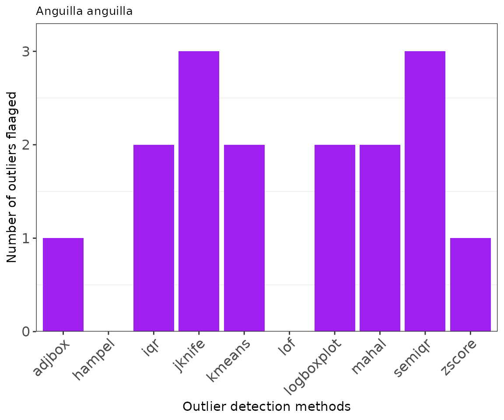
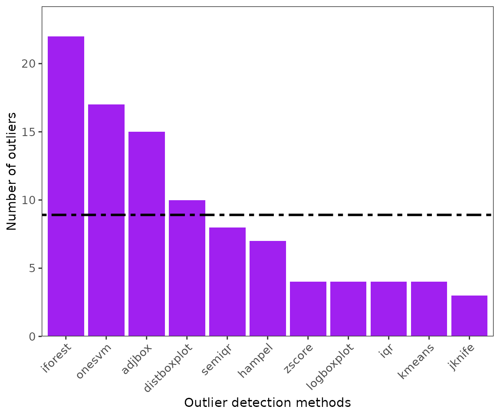
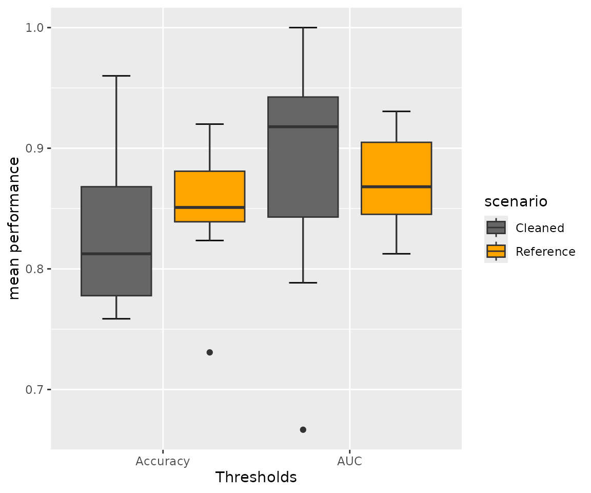
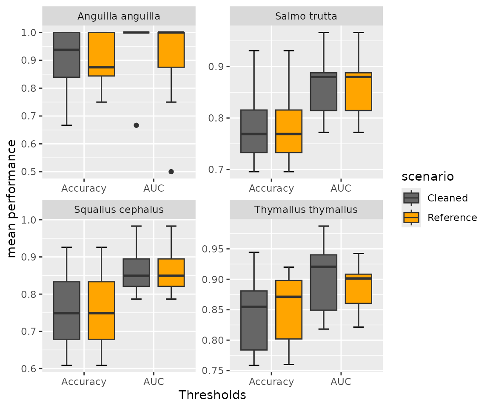

Environmental outlier detection in fish species records.
Source:vignettes/eOutlier.Rmd
eOutlier.RmdEnvironmental outlier check for fish species from the Danube River Basin
The workflow for environmental outlier detection and removal is
similar across taxa, regions, or ecological realms. However, we included
the check_names() function to cater for
fish species names exhaustively. In this worked example, we tried the
functionalities on the fish species from the Danube River Basin, with
extracts of species records from Joint Danube Survey (JDS) and EFI+ data
archived in the package. We complimented the data with fish species
occurrences from online sources including Global Biodiversity
Information Facility (GBIF), iNaturalist, and VertNET using the
getdata() function. They are basically
five steps, including: 1) Data acquisition and harmonization; 2)
Precleaning and predictor extraction 3) outlier detection 4)
identification of clean data and suitable method 5) developing species
distribution models (optional).
- Data acquisition: a) Collate species species records: offline and online data
The species records were obtained from the archived datasets
extracted from the Joint Danube Survey (https://www.danubesurvey.org/jds4/) and EFIPLUS (Logez
et al., 2012). To compliment species records, we used the
getdata() function to retrieve data from
the GBIF (https://www.gbif.org/), VertNet (http://www.vertnet.org/)
and iNaturalist ( https://www.inaturalist.org/) for Squalius
cephalus, Salmo trutta, Thymallus thymallus, and
Anguilla anguilla. For online data, we limited data to 50
records from each data source to reduce on the execution time.
#==========================
#Step 1ai. Obtain Local data sources (archived in this package)
#=========================
data(efidata) #Data extract from EFIPLUS data
data(jdsdata) #Data extract from JDS4 data
#===================================
#Step 1aii: Retrieve online data for the species: polygon to limit the extent to get records.
#=====================================
danube <- sf::st_read(system.file('extdata/danube/basinfinal.shp', package = 'specleanr'), quiet=TRUE)
df_online <- getdata(data = c("Squalius cephalus", 'Salmo trutta',
"Thymallus thymallus","Anguilla anguilla"),
bbox = danube,
gbiflim = 50,
inatlim = 50,
vertlim = 50,
verbose = F)
dim(df_online)
#> [1] 567 8Merging and harmonizing species records from different sources
The online data sources from getdata()
and local files are merged using the
match_datasets() function. Five columns
are harmonized while combining data from different sources: the country,
species names, latitude/longitude columns, and dates. The Darwin Core
standard names are country, species, decimalLatitude, decimalLongitude,
and dates (Wieczorek et al., 2012). So, if the local dataset has a
different name for standard names, the user should indicate it. For
example, in JDS data, the species column is labeled
speciesname, shown in the species parameter for
automatic renaming and merging with other datasets. * Note: The user
should indicate all dataset names in the list. *
check_names() is used to clean species names in terms of
synonyms or spellings, based on FishBase (https://www.fishbase.se/). This function generates
another column speciescheck that contain the clean
names.
mergealldfs <- match_datasets(datasets = list(efi= efidata, jds = jdsdata,
onlinedata = df_online),
country = c('JDS4_sampling_ID'),
lats = 'lat', lons = 'lon',
species = c('speciesname', 'scientificName'))
#Species names are re-cleaned since the species names from vertnet are changed.
cleannames_df <- check_names(data = mergealldfs, colsp = 'species', pct = 70, merge = TRUE)
#Filter out species from cleannames df where the species names such as synonyms like Salmo trutta fario chnaged to Slamo trutta
speciesfiltered <- cleannames_df[cleannames_df$speciescheck %in% c("Squalius cephalus", 'Salmo trutta', "Thymallus thymallus","Anguilla anguilla"),]- Data acquisition: b) Environmental predictors
We used WORLDCLIM data archived in the package to enable users to
test the package functions seamlessly. For direct interaction with the
WORDCLIM data, please visit (https://www.worldclim.org/) and the
geodata package for download in
user-customized workflows. WORLDCLIM data has 19 bioclimatic variables
(https://www.worldclim.org/data/bioclim.html),
including;
-
BIO1= Annual Mean Temperature -
BIO2= Mean Diurnal Range (Mean of monthly (max temp - min temp)) -
BIO3= Isothermality (BIO2/BIO7) (×100) -
BIO4= Temperature Seasonality (standard deviation ×100) -
BIO5= Max Temperature of Warmest Month -
BIO6= Min Temperature of Coldest Month -
BIO7= Temperature Annual Range (BIO5-BIO6) -
BIO8= Mean Temperature of Wettest Quarter -
BIO9= Mean Temperature of Driest Quarter -
BIO10= Mean Temperature of Warmest Quarter -
BIO11= Mean Temperature of Coldest Quarter -
BIO12= Annual Precipitation -
BIO13= Precipitation of Wettest Month -
BIO14= Precipitation of Driest Month -
BIO15= Precipitation Seasonality (Coefficient of Variation) -
BIO16= Precipitation of Wettest Quarter -
BIO17= Precipitation of Driest Quarter -
BIO18= Precipitation of Warmest Quarter -
BIO19= Precipitation of Coldest Quarter
#Get climatic variables from the package folder
worldclim <- terra::rast(system.file('extdata/worldclim.tiff', package = 'specleanr'))- Precleaning and environmental data extraction Here,
- The duplicate records are removed if points they are obtained from the same location for the same species.
- The missing values coordinates are removed.
- The environmental predictors are extracted from the raster layers (WORLDCLIM).
- The user can set the minimum point for the species to be retianed for further analyis.
- The bounding box can be set to limit the extent of data extraction. For this case, we used the basin layer for the Danube Basin was obtained from Hydrography90m (https://hydrography.org/hydrography90m/hydrography90m_layers).
- The user can either return a dataframe or list of the cleaned data. Important in the next steps.
#Get basin shapefile to delineate the study region: optional
danube <- sf::st_read(system.file('extdata/danube/basinfinal.shp', package = 'specleanr'), quiet=TRUE)
#For multiple species indicate multiple TRUE
multipreclened <- pred_extract(data= speciesfiltered,
raster= worldclim,
lat = 'decimalLatitude',
lon = 'decimalLongitude',
colsp = 'speciescheck',
bbox = danube,
multiple = TRUE,
list= TRUE,
minpts = 10, merge = FALSE)
names(multipreclened)
#> [1] "Salmo trutta" "Anguilla anguilla" "Squalius cephalus"
#> [4] "Thymallus thymallus"
ttdata <- speciesfiltered[speciesfiltered[,'speciescheck'] %in%c("Thymallus thymallus"),]
dim(ttdata)
#> [1] 135 7
#For single species indicate multiple to FALSE
ttrefdata<- pred_extract(data= ttdata, raster= worldclim,
lat = 'decimalLatitude',
lon = 'decimalLongitude',
colsp = 'speciescheck',
bbox = danube,
multiple = FALSE,
list= TRUE,
minpts = 10)
dim(ttrefdata)
#> [1] 73 21-
Outlier detection Multiple outlier detection are
set. This package contains 20 outlier detection methods and the user can
run
extractMethods()to get the allowed methods. They are categorized into univariate, multivariate and species ecological ranges.
-
varis the predictor to be used univariate methods. -
excludeallows to remove predictors that user deems unnecessary. For example, the coordinates, since the multivariate methods consider the whole dataset.
#For outliers, the output is set to outlier
multioutliers <- multidetect(data = multipreclened,
multiple = TRUE,
var = 'bio6',
output = 'outlier',
exclude = c('x','y'),
methods = c('zscore', 'adjbox','iqr', 'semiqr','hampel','kmeans', 'mahal',
'logboxplot','jknife','lof'))
#single species
ttoutlier<- multidetect(data = ttrefdata,
multiple = FALSE,
var = 'bio6',
output = 'outlier',
exclude = c('x','y'),
methods = c('zscore', 'adjbox','iqr', 'semiqr','hampel','kmeans', 'mahal',
'logboxplot', 'jknife', 'lof'))- Outlier visualization
-
ggoutliersare based in ggplot2, so it can be modified based on user needs. x: is the output for outlier detection, y is the species name or index for multiple species, and raw = TRUE if the number of outliers are the displayed, otherwise the proportion of outliers to the total number of records will be plotted.
#for multiple species
ggoutliers(multioutliers, y=2, raw=TRUE)
#for single species
ggoutliers(ttoutlier, raw=TRUE)
Identify the best threshold using loess model. The local regression is used to optimize and identify the best threshold for denoting the point as an absolute outlier. We fit the local region model between the data retained at every threshold, and we identify a maxima when the number of records retain are number of records retained does not significantly vary with an increased increase in the threshold.
ttoptimal <- optimal_threshold(refdata = ttrefdata, outliers = ttoutlier, plot = TRUE)
#obtain the optimal thresholds for multiple species
#plotting is not allowed for multiple species.
multioptimal <- optimal_threshold(refdata = multipreclened, outliers = multioutliers, plot = FALSE)- Extracting clean data from the reference data (precleaned data in step 2).
The user sets a threshold ranging from 0.1 to 1 but its advisable to set a value above 0.5 to include above 50% of the methods. threshold is the value indicating the proportion of methods to be used to classify a record as a true outlier. For example, a threshold of 0.6 means that at least in the 4 of the 6 methods noted during outlier detection in step 3. We used the loess method for identifying the optimal threshold.
multspecies_clean <- extract_clean_data(refdata = multipreclened, outliers = multioutliers, loess = TRUE)
head(multspecies_clean)
#> bio1 bio2 bio3 bio4 bio5 bio6 bio7 bio8
#> 1 6.293614 8.755938 31.96181 690.1050 20.90625 -6.48875 27.39500 7.375333
#> 2 7.285375 7.849375 30.75201 670.6682 21.14325 -4.38150 25.52475 13.902708
#> 3 6.277937 9.805208 34.03463 713.7357 21.25975 -7.54975 28.80950 15.009750
#> 4 4.414302 7.574229 32.06125 606.7263 17.16025 -6.46400 23.62425 11.899292
#> 5 6.844615 8.234104 33.66596 620.3636 19.99575 -4.46250 24.45825 14.519917
#> 6 6.505573 8.508604 33.53277 649.9034 19.95200 -5.42200 25.37400 14.466125
#> bio9 bio10 bio11 bio12 bio13 bio14 bio15 bio16 bio17 bio18
#> 1 -1.1756251 14.80313 -2.0642917 2118 241 105 21.73814 663 379 530
#> 2 0.2236667 15.52933 -0.8936250 923 113 57 23.52207 308 175 306
#> 3 -2.5227084 15.00975 -2.5227084 1042 144 44 37.74431 403 152 403
#> 4 -2.7298751 11.89929 -2.7298751 1289 169 67 33.19698 486 219 486
#> 5 -0.5310833 14.51992 -0.5310833 1330 182 66 37.53233 523 213 523
#> 6 -0.3784584 14.46612 -1.3513334 1380 188 75 32.60979 522 255 522
#> bio19 x y species
#> 1 412 13.91667 46.25000 Salmo trutta
#> 2 183 9.75000 48.41667 Salmo trutta
#> 3 152 14.91667 47.25000 Salmo trutta
#> 4 219 11.08333 47.41667 Salmo trutta
#> 5 213 11.25000 47.58333 Salmo trutta
#> 6 261 13.25000 47.75000 Salmo trutta
ttclean<- extract_clean_data(refdata = ttrefdata, outliers = ttoutlier, loess = TRUE)
dim(ttclean)
#> [1] 73 22Model comparison
This is done to identify the suitable threshold that produces the highest model performance.
minptsparameters indicates the points that should be allowed in fitting a distribution model. Default is 10. error might appear if the records are not enough to fit the models.loessthresholdset to TRUE to execute data cleaning data extraction using optimal threshold identified using the loess method.Note: When using
modelcomparison(), the function ofsdmfit(), andextract_clean_data()are incorporated and therefore the user do not need to do these steps separately.
ttcompare <- modelcomparison(refdata = ttrefdata, outliers = ttoutlier, raster = worldclim,
lat = 'y', lon = 'x', full = FALSE, metrics = 'all', minpts = 17,
loessthreshold = TRUE)
#> Warning in clean_data(data = dfsp, outliers = outliers, sp = spv, warn = warn,
#> : Please use extract_clean_data instead of clean_data_extract.
ttmodper <- get_performance(modelcomp = ttcompare)
multcomparion <- modelcomparison(refdata = multipreclened, outliers = multioutliers,
raster = worldclim,
lat = 'y', lon = 'x', full = FALSE,
metrics = 'all', minpts = 18,loessthreshold = TRUE)
#> Warning in clean_data(data = dfsp, outliers = outliers, sp = spv, warn = warn,
#> : Please use extract_clean_data instead of clean_data_extract.
#> Warning in clean_data(data = dfsp, outliers = outliers, sp = spv, warn = warn,
#> : Please use extract_clean_data instead of clean_data_extract.
#> Warning in clean_data(data = dfsp, outliers = outliers, sp = spv, warn = warn,
#> : Please use extract_clean_data instead of clean_data_extract.
#> Warning in clean_data(data = dfsp, outliers = outliers, sp = spv, warn = warn,
#> : Please use extract_clean_data instead of clean_data_extract.
multmodelper <- get_performance(modelcomp = multcomparion)Visualizing the performance of models before and after removal of outliers.
The outlier removal in the species records of Thymallus thymallus led to improved model performance in accuracy and Area under the curve (AUC). However, in the multiple species, the performance of the Anguilla anguilla and_Squalius cephalus_ models remained the same. This is because there were no absolute outliers at the optimal threshold; therefore, the reference and clean datasets were the same. The performance in the Salmo trutta models was slightly higher for the reference dataset based on the Area Under the Curve.

#For multiple species Squalius cephalus, Salmo trutta, Thymallus thymallus,Anguilla anguilla
ggperform(multcomparion, scolor = c("grey40", "orange"))
References 1. Wieczorek, J., Bloom, D., Guralnick, R., Blum, S., Döring, M., Giovanni, R., Robertson, T., & Vieglais, D. (2012). Darwin core: An evolving community-developed biodiversity data standard. PLoS ONE, 7(1). https://doi.org/10.1371/journal.pone.0029715